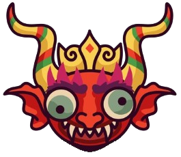

Sair
Qual dança boliviana combina mais com você?
1. Qual dessas palavras descreve melhor sua personalidade?
Elegância
Energia
Tradição
Mistério
2. Qual estilo de roupa você prefere?
Trajes com bordados e chapéu elegante
Roupas leves para movimentos intensos
Trajes tradicionais com ornamentos coloridos
Fantasias impressionantes com máscaras
3. 3. Como você gosta de dançar?
Movimentos graciosos e sincronizados
Dança vigorosa e cheia de saltos
Ritmo forte e passos intensos em grupo
Uma mistura de drama e teatralidade
4. Qual cenário combina mais com você?
Um desfile cheio de pompa e ritmo marcante
Uma celebração cheia de força e energia em grupo
Uma festa tradicional com raízes comunitárias profundas
Uma apresentação teatral com história e fantasia
5. Que tipo de música te atrai mais?
Ritmos marcados pelo som do sino
Batidas fortes de tambores
Música folclórica tradicional e vibrante
Sons que misturam drama e intensidade
6. Se você estivesse participando de um desfile, como seria sua postura?
Orgulhoso(a) e elegante.
Energético(a) e cheio(a) de vigor.
Sereno(a) e em harmonia com o grupo.
Misterioso(a) e teatral.
7. Qual tipo de celebração cultural te atrai mais?
Festas comunitárias com desfiles e danças coreografadas.
Eventos ao ar livre com desafios físicos e competitivos.
Festas tradicionais onde a música e a união familiar são o centro.
Celebrações que misturam teatro e drama religioso.
8. Como você descreveria sua energia ao dançar?
Moderada, mas com movimentos elegantes.
Intensa e cheia de explosão.
Constante, em harmonia com o grupo.
Variável, dependendo do clima da apresentação.
9. Se você fosse escolher um acessório para sua roupa de dança, qual seria?
Um chapéu decorado com detalhes brilhantes.
Faixas e ornamentos leves.
Máscaras ou detalhes tradicionais do folclore.
Algo dramático, como uma capa ou asas.
10. Qual destes ambientes você prefere para dançar?
Palcos ou ruas com muitas pessoas assistindo.
Áreas abertas, onde você pode se movimentar livremente.
Locais históricos ou culturais.
Teatros ou festas que envolvem uma narrativa.
Ver Resultado